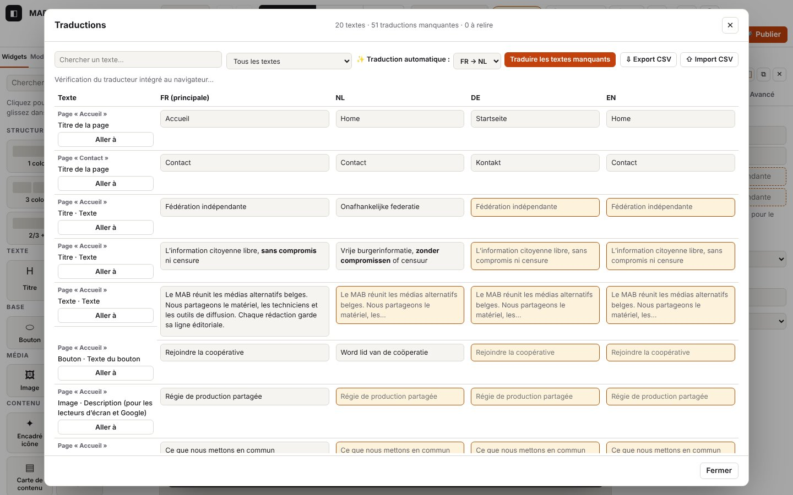

5. Langues et traductions

Sur cette page
Un site Atelier peut exister en plusieurs langues (français, néerlandais, allemand, anglais, japonais). Tu écris dans la langue principale, puis tu traduis : à la main dans le tableau des traductions, automatiquement sur ton ordinateur (traducteur intégré à Chrome, rien n'est envoyé à un serveur), ou en passant un fichier CSV à un traducteur.
Domaines du journal : i18n.* (tableau des traductions : ouverture, filtres, saisie, relecture, CSV), translate.* (traduction sur l'appareil : état du traducteur par paire de langues, téléchargement du modèle, traduction d'un lot, échecs), settings.lang-* (langues du site, panneau Site).
5.1 Choisir les langues du site
But : ajouter ou retirer une langue, et changer la langue affichée dans l'éditeur.
Étapes
- Panneau de gauche, onglet « Site » : coche ou décoche une langue (la langue principale ne se décoche pas).
- En haut, le menu des langues change la langue affichée dans le canevas (tu édites alors cette langue).
Ce que tu vois : la langue apparaît dans le menu du haut et comme colonne dans le tableau des traductions ; ses textes sont « à traduire ». Une langue retirée disparaît du site publié, mais ses traductions restent dans le projet (la recocher les retrouve).
Journal attendu (journaux/langues-site.log, lignes canvas.* omises)
Détails techniques : journal attendu
21:49:07.943 +9.66s INFO settings.lang-remove Langue retirée : English (ses traductions restent dans le projet) {"lang":"en","languages":["fr","nl","de"],"main":"fr"}
21:49:07.944 +9.66s DEBUG store.view Vue :
…
21:49:08.298 +10.02s DEBUG store.view Vue : lang=nl {"lang":"nl"}
…
21:49:08.636 +10.36s DEBUG store.view Vue : lang=fr {"lang":"fr"}
…
21:49:08.893 +10.61s INFO settings.lang-add Langue ajoutée : English (textes à traduire) {"lang":"en","languages":["fr","nl","de","en"],"main":"fr"}
21:49:08.893 +10.61s DEBUG store.view Vue : À vérifier : settings.lang-remove puis settings.lang-add avec la liste languages à jour ; store.view avec lang=nl quand tu changes la langue affichée.
Variantes
| Situation | Ce qui change | Journal |
|---|---|---|
| Changer la langue affichée | le canevas se recharge dans cette langue | store.view {"lang":"nl"} puis canvas.load.* (chapitre 2) |
Erreurs
| Situation | Message affiché | Journal | Que faire |
|---|---|---|---|
| Décocher la langue principale | impossible (case grisée) | rien | change d'abord la langue principale |
5.2 Ouvrir le tableau des traductions, filtrer, chercher, saisir
But : voir tous les textes du site, une colonne par langue, et compléter ce qui manque.
Étapes
- Barre du haut : « 🌐 Traductions » (ou Ctrl+K « Tableau des traductions »).
- Filtre : « Tous les textes », « À traduire seulement » ou « Traductions automatiques à relire ». Champ « Chercher un texte… ».
- Clique dans une case et tape la traduction ; elle est enregistrée quand tu quittes la case.
- « Aller à » ferme le tableau et montre le texte dans la page.
Ce que tu vois : en haut, « 24 textes · 59 traductions manquantes · 6 à relire » ; les cases manquantes sont teintées.
Journal attendu (journaux/langues-tableau.log)
Détails techniques : journal attendu
21:49:05.076 +6.80s INFO i18n.open Tableau des traductions : 23 textes, 56 traduction(s) manquante(s), 6 à relire {"languages":["fr","nl","de","en"],"main":"fr","filter":"all","visible":23,"shown":23,"missing":56,"review":6,"mtLang":"nl"}
21:49:05.077 +6.80s WARN translate.absent Pas d’API Translator dans ce navigateur (Chrome 138+ sur ordinateur) : export CSV proposé {"from":"fr","to":"nl","ua":"HeadlessChrome 141, Not?A_Brand 8, Chromium 141"}
21:49:05.112 +6.83s DEBUG i18n.filter Filtre : missing (20 textes) {"filter":"missing","visible":20,"shown":20,"missing":56,"review":6}
…
21:49:05.292 +7.01s DEBUG i18n.filter Filtre : all (23 textes) {"filter":"all","visible":23,"shown":23,"missing":56,"review":6}
…
21:49:05.507 +7.23s DEBUG i18n.edit Traduction saisie (de) {"key":"n:p_mmlk9wyr:n_5y4p1n6860:text","lang":"de","len":23}À vérifier : i18n.open donne le nombre de textes visibles (visible), de traductions manquantes (missing) et à relire (review), et la langue cible de la traduction automatique (mtLang). Juste après, une ligne translate.* dit si le traducteur de Chrome est disponible (ici translate.absent : le navigateur de test n'a pas l'API). i18n.filter donne le filtre et le nombre de lignes ; i18n.edit la clé du texte, la langue et la longueur saisie.
Variantes
| Situation | Ce qui change | Journal |
|---|---|---|
| Recherche | la liste se réduit à chaque lettre | i18n.search (TRACE : visible seulement avec ?trace) {"len":4,"visible":1} |
| Plus de 300 textes | bouton « Afficher plus » | i18n.more (DEBUG) {"shown":600,"visible":812} |
| « Aller à » | le tableau se ferme, le texte est sélectionné dans la page | i18n.go (DEBUG) avec key et lang, puis store.select |
| Case vidée | la traduction est retirée (la langue principale s'affiche à la place) | i18n.edit avec "empty":true |
Erreurs
| Situation | Message affiché | Journal | Que faire |
|---|---|---|---|
| Texte refusé (langue absente du site, clé disparue pendant la saisie) | message d'erreur rouge | i18n.edit-fail (WARN) avec key, lang et l'erreur | ferme et rouvre le tableau ; si ça se répète, envoie le journal |
5.3 Traduire automatiquement sur l'appareil
But : remplir d'un coup les traductions manquantes d'une langue, sans envoyer les textes à un service en ligne.
Étapes
- Dans le tableau, « ✨ Traduction automatique » : choisis la paire (ex. « FR → EN »).
- Le message sous la barre dit si le traducteur est prêt ou s'il sera téléchargé.
- « Traduire les textes manquants » ; « Arrêter » interrompt à tout moment.
Ce que tu vois : « Traduction en English : 12 / 21… », puis « Terminé : 21 textes traduits. Relisez-les : ils sont marqués « à relire » ». Le filtre passe sur « à relire ».
Journal attendu — traducteur de Chrome, modèle à télécharger (journaux/langues-translator-chrome.log)
Détails techniques : journal attendu
21:49:07.095 +8.81s INFO translate.status Traducteur fr → nl : downloadable (modèle à télécharger au premier clic) {"from":"fr","to":"nl","state":"downloadable","ms":0,"source":"chrome"}
21:49:07.113 +8.83s INFO translate.status Traducteur fr → de : downloadable (modèle à télécharger au premier clic) {"from":"fr","to":"de","state":"downloadable","ms":0,"source":"chrome"}
21:49:07.169 +8.89s INFO translate.batch.start [translate.batch#4] Traduction automatique fr → de {"from":"fr","to":"de"}
21:49:07.170 +8.89s INFO translate.model.start [translate.model#2] Préparation du traducteur fr → de {"from":"fr","to":"de"}
21:49:07.181 +8.90s DEBUG translate.model.download [translate.model#2 · 11 ms] Téléchargement du modèle fr → de : 30 % {"pct":30}
21:49:07.186 +8.91s DEBUG translate.model.download [translate.model#2 · 16 ms] Téléchargement du modèle fr → de : 60 % {"pct":60}
21:49:07.192 +8.91s DEBUG translate.model.download [translate.model#2 · 22 ms] Téléchargement du modèle fr → de : 100 % {"pct":100}
21:49:07.197 +8.92s INFO translate.model.ok [translate.model#2 · 27 ms] Traducteur fr → de prêt {"downloaded":true}
21:49:07.198 +8.92s DEBUG translate.batch.ready [translate.batch#4 · 29 ms] Traducteur prêt : traduction des textes manquants
21:49:07.199 +8.92s DEBUG translate.batch.progress [translate.batch#4 · 30 ms] 1 / 5 textes {"done":1,"total":5,"count":1,"errors":0}
21:49:07.200 +8.92s DEBUG translate.batch.progress [translate.batch#4 · 31 ms] 2 / 5 textes {"done":2,"total":5,"count":2,"errors":0}
21:49:07.200 +8.92s DEBUG translate.batch.progress [translate.batch#4 · 31 ms] 3 / 5 textes {"done":3,"total":5,"count":3,"errors":0}
21:49:07.200 +8.92s DEBUG translate.batch.progress [translate.batch#4 · 31 ms] 4 / 5 textes {"done":4,"total":5,"count":4,"errors":0}
21:49:07.201 +8.92s DEBUG translate.batch.progress [translate.batch#4 · 32 ms] 5 / 5 textes {"done":5,"total":5,"count":5,"errors":0}
…
21:49:07.209 +8.93s INFO translate.batch.ok [translate.batch#4 · 40 ms] 5 texte(s) traduit(s) fr → de, marqués « à relire » {"count":5,"errors":0,"total":5}
21:49:07.256 +8.98s INFO translate.status Traducteur fr → nl : downloadable (modèle à télécharger au premier clic) {"from":"fr","to":"nl","state":"downloadable","ms":0,"source":"chrome"}
21:49:07.307 +9.03s INFO translate.batch.start [translate.batch#5] Traduction automatique fr → nl {"from":"fr","to":"nl"}
…
21:49:07.308 +9.03s DEBUG translate.batch.ready [translate.batch#5 · 1 ms] Traducteur prêt : traduction des textes manquants
21:49:07.309 +9.03s DEBUG translate.batch.progress [translate.batch#5 · 2 ms] 1 / 10 textes {"done":1,"total":10,"count":1,"errors":0}
21:49:07.311 +9.03s DEBUG translate.batch.progress [translate.batch#5 · 4 ms] 3 / 10 textes {"done":3,"total":10,"count":3,"errors":0}
21:49:07.313 +9.03s DEBUG translate.batch.progress [translate.batch#5 · 6 ms] 5 / 10 textes {"done":5,"total":10,"count":5,"errors":0}
21:49:07.315 +9.04s DEBUG translate.batch.progress [translate.batch#5 · 8 ms] 8 / 10 textes {"done":8,"total":10,"count":8,"errors":0}
21:49:07.317 +9.04s DEBUG translate.batch.progress [translate.batch#5 · 10 ms] 10 / 10 textes {"done":10,"total":10,"count":10,"errors":0}
…
21:49:07.330 +9.05s INFO translate.batch.ok [translate.batch#5 · 23 ms] 10 texte(s) traduit(s) fr → nl, marqués « à relire » {"count":10,"errors":0,"total":10}À vérifier : translate.status donne l'état par paire (available, downloadable, downloading) ; le parcours translate.batch contient le parcours translate.model (création du traducteur, avec la progression du téléchargement translate.model.download), puis translate.batch.progress tous les quarts environ, et translate.batch.ok avec count, errors, total et la durée totale entre crochets. Chaque texte traduit écrit aussi translate.text (TRACE : longueurs et durée), visible avec ?trace.
Variantes
| Situation | Ce qui change | Journal |
|---|---|---|
| Traducteur de test (tests automatiques) | « Traducteur de test » | translate.status {"source":"test"}, translate.create (DEBUG) au lieu de translate.model.* (journaux/langues-traduction-auto.log) |
| Même paire une deuxième fois | pas de téléchargement | translate.reuse (DEBUG) « déjà prêt » au lieu de translate.model.* |
| Tout est déjà traduit | « Terminé : 0 texte traduit » | translate.batch.ok {"count":0,"total":0} |
| Tu cliques « Arrêter » | « Interrompu : 7 textes traduits » ; ceux-là sont gardés | translate.batch.cancel (INFO) {"count":7,"total":17} (journaux/langues-traduction-arret.log) |
| Site à une seule langue | « Ce site n'a qu'une langue. » | translate.single-lang (DEBUG) |
Extrait « arrêter » :
Détails techniques : journal attendu
21:49:06.719 +8.44s INFO translate.batch.start [translate.batch#3] Traduction automatique fr → nl {"from":"fr","to":"nl"}
…
21:49:06.761 +8.48s DEBUG translate.batch.progress [translate.batch#3 · 42 ms] 1 / 16 textes {"done":1,"total":16,"count":1,"errors":0}
21:49:06.884 +8.60s DEBUG translate.batch.progress [translate.batch#3 · 165 ms] 4 / 16 textes {"done":4,"total":16,"count":4,"errors":0}
…
21:49:06.987 +8.71s INFO translate.batch.cancel [translate.batch#3 · 268 ms] Arrêté par la personne : 6 / 16 textes traduits {"count":6,"errors":0,"total":16}Erreurs
| Situation | Message affiché | Journal | Que faire |
|---|---|---|---|
| Navigateur sans API Translator (Firefox, Safari, Chrome < 138, mobile) | « La traduction automatique sur l'appareil demande Chrome 138… Vous pouvez aussi exporter le tableau en CSV » ; bouton grisé | translate.absent (WARN) avec le navigateur (ua) | Chrome récent sur ordinateur, ou export CSV (5.5) |
| Paire non proposée par Chrome | « Chrome ne propose pas la traduction FR → EN sur cet appareil. » | translate.unavailable (WARN) | autre paire, ou CSV |
| Chrome ne répond pas en 4 s | « Chrome ne répond pas pour la traduction automatique… » | translate.timeout (WARN) | relance Chrome ; regarde chrome://on-device-internals |
availability() lève une erreur | « Traduction automatique indisponible : … » | translate.status-fail (WARN) avec error.name | envoie le journal |
| Téléchargement refusé (geste requis) | « Traduction automatique impossible : Requires a user gesture… » | translate.model.fail (ERROR) avec hint « Chrome exige un clic… », puis translate.batch.fail (ERROR) | reclique sur le bouton (le téléchargement doit partir d'un clic) |
| Certains textes échouent | « Terminé : 15 textes traduits, 5 échecs » | translate.text-fail (WARN) pour chacun (longueur, erreur), translate.batch.errors (WARN), puis translate.batch.ok avec errors | relance : seuls les manquants sont repris |
Extrait « erreurs du traducteur de Chrome » (journaux/langues-translator-erreurs.log) :
Détails techniques : journal attendu
21:49:07.417 +9.14s WARN translate.unavailable Chrome ne propose pas fr → en sur cet appareil {"from":"fr","to":"en","state":"unavailable","ms":0}
…
21:49:07.484 +9.20s INFO translate.batch.start [translate.batch#6] Traduction automatique fr → en {"from":"fr","to":"en"}
21:49:07.484 +9.20s INFO translate.model.start [translate.model#3] Préparation du traducteur fr → en {"from":"fr","to":"en"}
21:49:07.484 +9.20s ERROR translate.model.fail [translate.model#3 · 0 ms] Traducteur fr → en impossible : NotAllowedError — Requires a user gesture when availability is "downloadable". {"from":"fr","to":"en","hint":"Chrome exige un clic de la personne pour télécharger le modèle de traduction (geste…
21:49:07.486 +9.21s ERROR translate.batch.fail [translate.batch#6 · 2 ms] Traduction automatique impossible : Requires a user gesture when availability is "downloadable". {"from":"fr","to":"en","error":{"name":"NotAllowedError","message":"Requires a user gesture when availability is \"downloadable\…
21:49:07.506 +9.23s WARN translate.status-fail Translator.availability(fr → nl) a échoué : OperationError — Service indisponible (simulé) {"from":"fr","to":"nl","ms":0,"error":{"name":"OperationError","message":"Service indisponible (simulé)","code":0}}Extrait « échecs partiels » (journaux/langues-traduction-echecs.log) :
Détails techniques : journal attendu
21:49:06.451 +8.17s INFO translate.batch.start [translate.batch#2] Traduction automatique fr → de {"from":"fr","to":"de"}
…
21:49:06.454 +8.17s WARN translate.text-fail Traduction fr → de d’un texte impossible : UnknownError — Unable to translate (simulé) {"from":"fr","to":"de","inLen":23,"ms":0,"error":{"name":"UnknownError","message":"Unable to translate (simulé)","code":0}}
…
21:49:06.456 +8.18s WARN translate.text-fail Traduction fr → de d’un texte impossible : UnknownError — Unable to translate (simulé) {"from":"fr","to":"de","inLen":11,"ms":0,"error":{"name":"UnknownError","message":"Unable to translate (simulé)","code":0}}
…
21:49:06.459 +8.18s WARN translate.text-fail Traduction fr → de d’un texte impossible : UnknownError — Unable to translate (simulé) {"from":"fr","to":"de","inLen":15,"ms":0,"error":{"name":"UnknownError","message":"Unable to translate (simulé)","code":0}}
…
21:49:06.460 +8.18s WARN translate.text-fail Traduction fr → de d’un texte impossible : UnknownError — Unable to translate (simulé) {"from":"fr","to":"de","inLen":17,"ms":0,"error":{"name":"UnknownError","message":"Unable to translate (simulé)","code":0}}
21:49:06.461 +8.18s WARN translate.text-fail Traduction fr → de d’un texte impossible : UnknownError — Unable to translate (simulé) {"from":"fr","to":"de","inLen":1,"ms":0,"error":{"name":"UnknownError","message":"Unable to translate (simulé)","code":0}}
…
21:49:06.470 +8.19s WARN translate.batch.errors [translate.batch#2 · 19 ms] 5 texte(s) non traduit(s) (voir translate.text-fail) {"errors":5,"total":19}
21:49:06.470 +8.19s INFO translate.batch.ok [translate.batch#2 · 19 ms] 14 texte(s) traduit(s) fr → de, marqués « à relire » {"count":14,"errors":5,"total":19}5.4 Relire les traductions automatiques
But : valider ce que la machine (traducteur ou IA locale) a écrit.
Étapes
- Filtre « Traductions automatiques à relire ».
- Corrige la case si besoin, puis « ✓ Valider ». Corriger le texte directement dans la page le valide aussi.
Ce que tu vois : l'étiquette « Traduction automatique à relire » disparaît ; le compteur « à relire » baisse. La vérification avant export (chapitre 8) rappelle ce qui reste à relire.
Journal attendu (journaux/langues-traduction-auto.log)
Détails techniques : journal attendu
21:49:06.069 +7.79s DEBUG i18n.review-ok Traduction automatique validée {"key":"p:p_mmlk9wyr:seo","lang":"fr"}i18n.review-ok (DEBUG) donne la clé et la langue validées, suivi de store.commit.
5.5 Exporter et importer un CSV pour un traducteur
But : faire traduire le site par une personne, dans un tableur.
Étapes
- « ⇩ Export CSV » : un fichier
<site>-traductions.csv(UTF-8, une colonne par langue, colonnekeyà ne pas toucher). - Le traducteur remplit les colonnes, enregistre en CSV (virgule ou point-virgule).
- « ⇧ Import CSV » : les textes modifiés sont mis à jour.
Ce que tu vois : « Import terminé : 1 texte mis à jour, 1 ligne ignorée (texte supprimé ou inconnu). »
Journal attendu (journaux/langues-csv.log)
Détails techniques : journal attendu
21:49:07.650 +9.37s INFO i18n.csv-export Tableau exporté en CSV : 22 ligne(s) {"rows":22,"languages":["fr","nl","de","en"],"size":5285}
…
21:49:07.690 +9.41s INFO i18n.csv-import.start [i18n.csv-import#1] Import CSV : traductions.csv {"name":"traductions.csv","size":5726,"type":"text/csv"}
21:49:07.700 +9.42s DEBUG i18n.csv-import.parsed [i18n.csv-import#1 · 10 ms] 23 ligne(s) lues {"rows":23,"columns":["key","type","fr","nl","de","en","ja"]}
21:49:07.702 +9.42s WARN i18n.csv-import.unknown-rows [i18n.csv-import#1 · 12 ms] 1 ligne(s) ignorée(s) : clé inconnue (texte supprimé depuis l’export ?) {"unknown":1,"keys":["n:inconnue:zz:text"]}
21:49:07.703 +9.42s WARN i18n.csv-import.unknown-columns [i18n.csv-import#1 · 13 ms] Colonne(s) ignorée(s) : ja (langue absente du site) {"columns":["ja"]}
…
21:49:07.713 +9.43s INFO i18n.csv-import.ok [i18n.csv-import#1 · 23 ms] Import terminé : 1 texte(s) mis à jour, 1 ligne(s) ignorée(s) {"changed":1,"unknown":1}À vérifier : i18n.csv-export (nombre de lignes, langues) ; le parcours i18n.csv-import : parsed (lignes et colonnes lues), puis ok avec changed (textes modifiés) et unknown (lignes refusées).
Variantes
| Situation | Ce qui change | Journal |
|---|---|---|
| Lignes dont la clé n'existe plus (texte supprimé depuis l'export) | ignorées, comptées dans le message | i18n.csv-import.unknown-rows (WARN) avec les 5 premières clés |
Colonne d'une langue absente du site (ex. ja) | colonne ignorée | i18n.csv-import.unknown-columns (WARN) |
| Rien n'a changé | « Import terminé : 0 texte mis à jour » | i18n.csv-import.ok {"changed":0} |
Erreurs
| Situation | Message affiché | Journal | Que faire |
|---|---|---|---|
Fichier sans colonne key (pas un export d'Atelier) | « Fichier CSV non reconnu : la colonne key est absente… » | i18n.csv-import.fail (ERROR) avec le nom du fichier | repars d'un export d'Atelier ; garde la colonne key |
Détails techniques : journal attendu
21:49:07.768 +9.49s INFO i18n.csv-import.start [i18n.csv-import#2] Import CSV : mauvais.csv {"name":"mauvais.csv","size":24,"type":"text/csv"}
21:49:07.771 +9.49s DEBUG i18n.csv-import.parsed [i18n.csv-import#2 · 3 ms] 1 ligne(s) lues {"rows":1,"columns":["nom","prénom"]}
21:49:07.771 +9.49s ERROR i18n.csv-import.fail [i18n.csv-import#2 · 3 ms] Import CSV refusé : Fichier CSV non reconnu : la colonne key est absente (exportez d’abord depuis Atelier). {"name":"mauvais.csv","error":{"name":"Error","message":"Fichier CSV non reconnu : la colonne key est absente (export…5.6 Un site en japonais
But : publier une version japonaise (ou un site entièrement en japonais) sans texte français ni adresse cassée.
Étapes
- Panneau « Site » : coche « 日本語 ». Pour un site japonais d'abord, choisis 日本語 comme langue principale au moment de créer le site (Fichier → Nouveau site vide, voir 1.5). Un projet
.jsondont la langue principale est le japonais garde aussi ce réglage quand tu l'ouvres (Fichier → Ouvrir un projet). - Traduis comme pour les autres langues (tableau, CSV ou traduction automatique ; la paire fr → ja est proposée par le traducteur de Chrome quand il la connaît).
- Pour l'adresse d'une page en japonais, clique sur « Proposer depuis le titre traduit » (Pages) ou tape-la : elle est convertie automatiquement.
Adresses (URL) des pages en japonais : les adresses restent en lettres latines, chiffres et tirets (a-z, 0-9, -). C'est le choix le plus sûr pour un hébergement OVH : pas de nom de dossier en UTF-8 abîmé par l'archive .zip, le transfert FTP ou publish.php, pas d'adresse illisible encodée en %E3%83%81… quand elle est copiée.
| Titre | Adresse proposée | Règle |
|---|---|---|
| チーム | /ja/chiimu/ | kana transcrits en rōmaji (Hepburn, sans macron ; « ー » double la voyelle) |
| ｶﾞｲﾄﾞ, ＡＢＣ | gaido, abc | demi-chasse et pleine chasse ramenés à la forme normale |
| チーム紹介, 会社のチーム | chiimu | texte mêlé de kanji : seuls les katakana sont transcrits (les hiragana n'y sont que des terminaisons) |
| 会社案内, お問い合わせ | page-1i2elyu… | rien de lisible : adresse de repli page-<empreinte>, stable (même titre → même adresse) |
Tu peux toujours remplacer l'adresse proposée par la tienne (par ex. kaisha-annai ou contact).
Ce que tu vois sur le site publié : <html lang="ja">, liens hreflang="ja" et plan du site avec la version japonaise, menu des langues « JA » (ou « 日本語 »). Les textes ajoutés par Atelier suivent la langue de la page, jamais celle de l'éditeur : « 本文へ移動 » (aller au contenu), « メニュー », « 動画を再生 », « 地図を表示（Google マップ） », messages du formulaire, dates de l'agenda (« 2026年11月3日火曜日 »). Les pages japonaises reçoivent une pile de polices japonaises de repli (Hiragino, Noto Sans JP, Yu Gothic, Meiryo ; Hiragino Mincho, Noto Serif JP, Yu Mincho pour une police à empattements), placée après la police du thème : ses lettres latines restent celles du thème. Interlignage un peu plus grand et retours à la ligne stricts (kinsoku).
Journal attendu : les mêmes codes que pour les autres langues (settings.lang-add avec "lang":"ja", page.add avec le slug en rōmaji, translate.* avec from=fr, to=ja).
Codes de ce chapitre
| Code | Niveau | Sens |
|---|---|---|
i18n.csv-export | INFO | tableau exporté en CSV (lignes, langues, taille) |
i18n.csv-import.start, i18n.csv-import.ok, i18n.csv-import.fail | INFO / INFO / ERROR | import d'un CSV (nom, taille) ; résultat (changed, unknown) ; fichier refusé |
i18n.csv-import.parsed | DEBUG | lignes et colonnes lues |
i18n.csv-import.unknown-rows | WARN | lignes ignorées : clé inconnue |
i18n.csv-import.unknown-columns | WARN | colonnes ignorées : langue absente du site |
i18n.edit | DEBUG | traduction saisie dans une case (clé, langue, longueur) |
i18n.edit-fail | WARN | traduction refusée |
i18n.filter | DEBUG | filtre du tableau changé (nombre de lignes) |
i18n.go | DEBUG | « Aller à » depuis le tableau |
i18n.more | DEBUG | « Afficher plus » |
i18n.open | INFO | tableau ouvert (textes, manquants, à relire, langues) |
i18n.review-ok | DEBUG | traduction automatique validée |
i18n.search | TRACE | recherche dans le tableau |
settings.lang-add / settings.lang-remove | INFO | langue ajoutée / retirée (panneau Site) |
translate.absent | WARN | pas d'API Translator dans ce navigateur |
translate.batch.start, translate.batch.ok, translate.batch.cancel, translate.batch.fail | INFO / INFO / INFO / ERROR | traduction automatique d'un lot : début, fin (count, errors, total, durée), arrêt, échec |
translate.batch.ready | DEBUG | traducteur prêt, début du lot |
translate.batch.progress | DEBUG | avancement (environ tous les quarts) |
translate.batch.errors | WARN | des textes n'ont pas pu être traduits |
translate.create | DEBUG | traducteur de test utilisé |
translate.model.start, translate.model.ok, translate.model.fail | INFO / INFO / ERROR | création du traducteur de Chrome pour une paire (téléchargement compris) |
translate.model.download | DEBUG | progression du téléchargement du modèle |
translate.reuse | DEBUG | traducteur déjà prêt pour cette paire |
translate.single-lang | DEBUG | site à une seule langue |
translate.status | INFO | état du traducteur pour une paire |
translate.status-fail | WARN | Translator.availability() a échoué |
translate.text | TRACE | un texte traduit (longueurs, durée) |
translate.text-fail | WARN | un texte n'a pas pu être traduit |
translate.timeout | WARN | Chrome ne répond pas en 4 s |
translate.unavailable | WARN | paire non proposée par Chrome sur cet appareil |